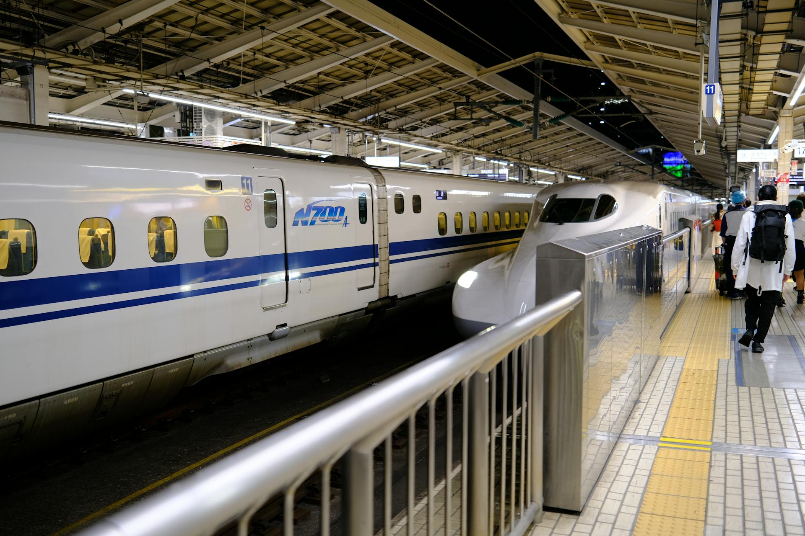

Wusstest du das? - Shinkansen
Der Shinkansen in Japan ist einer der schnellsten Züge der Welt. Der Shinkansen hat eine Höchstgeschwindigkeit von 320km/h. Ausserdem gehört er zu den sichersten Zügen der Welt. Seit seiner Inbetriebnahme 1964 kam es zu keinen Unfällen mit Todesfolgen